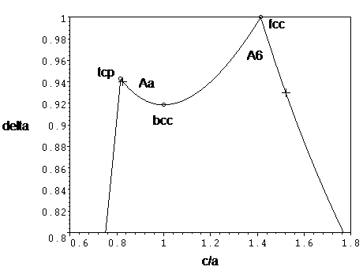

| Structural type | A6, Aa | |||||||||||||||
| Common name | A6 – face-centered tetragonal (fct), Aa – tetragonal close-packed (tcp) or body-centered tetragonal (bct) | |||||||||||||||
| Definition | A6 – tetragonal distortion of fcc, Aa – tetragonal close-packed deformation of bcc (see the diagram below) | |||||||||||||||
| Prototype | A6 – In, Aa – α-Pa | |||||||||||||||
| Pearson symbol | tI2 | |||||||||||||||
| Space group | 139 I4/mmm D4h17 | |||||||||||||||
| Chemical formula | A | |||||||||||||||
| Bonding | metallic-covalent | |||||||||||||||
| Atomic positions | A (2a) 0 0 0 | |||||||||||||||
| Coordination |
| |||||||||||||||
| PDB files | A6 (as fcc), Aa (ideally packed) | |||||||||||||||
| Parameters | A6 – c/a≈1.41, Aa – c/a≈0.82 | |||||||||||||||
| Superstructures | fcc for c/a=sqrt(2), bcc for c/a=1 | |||||||||||||||
| Substances | A6 – In (c/a=1.52), Aa – α-Pa (c/a=0.83) |
Like bcc, tcp is not a local maximum in packing – there is a orthorombic deformation which increases the packing continuously transforming to both fcc and hcp. In particular the highest symmetry path to hcp goes through oC4 lattice with space group 63 Cmcm and atoms occupying position (4c)=(0,eta,1/4), where b/a=sqrt(3), eta,c/a=0,sqrt(3) for tcp and 1/12,sqrt(8/3) for hcp. A martensitic bcc-hcp transition in iron goes this way.
